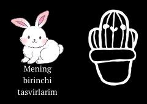

MBKichkintoylar uchun mo'ljallangan ilk kontrasta ega tasvirlar to'plami.
Ushbu kitobchada go'daklarning ko'rish qobiliyatini va diqqatini rivojlantirishga mo'ljallangan yorqin va aniq kontrasta ega ilk tasvirlar jamlangan. Kichkintoylar uchun maxsus tayyorlangan ushbu visual qo'llanma ilk oylardanoq idrokni o'stirishga yordam beradi.